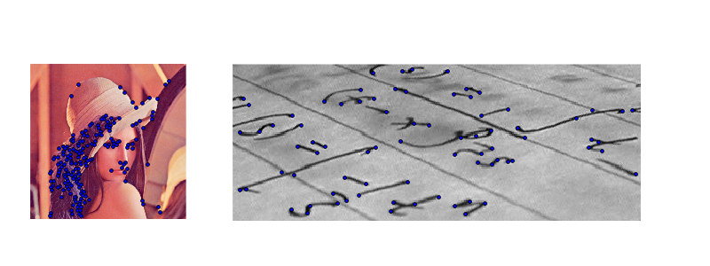

Harris Corner detector¶
The Harris corner filter detects interest points using edge detection in multiple directions.
Python source code: plot_harris.py
from matplotlib import pyplot as plt
from skimage import data, img_as_float
from skimage.filter import harris
# Find corner features
image = img_as_float(data.lena())
filtered_coords = harris(image, 6)
# Display
plt.figure(figsize=(8, 8))
plt.imshow(image, cmap=plt.cm.gray)
plt.scatter(filtered_coords[:, 1], filtered_coords[:, 0],
s=50, marker='s', c='g', alpha=0.5)
plt.axis('off')
plt.axis('image')
plt.show()